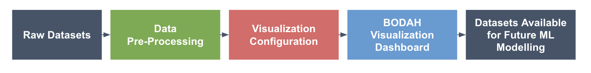
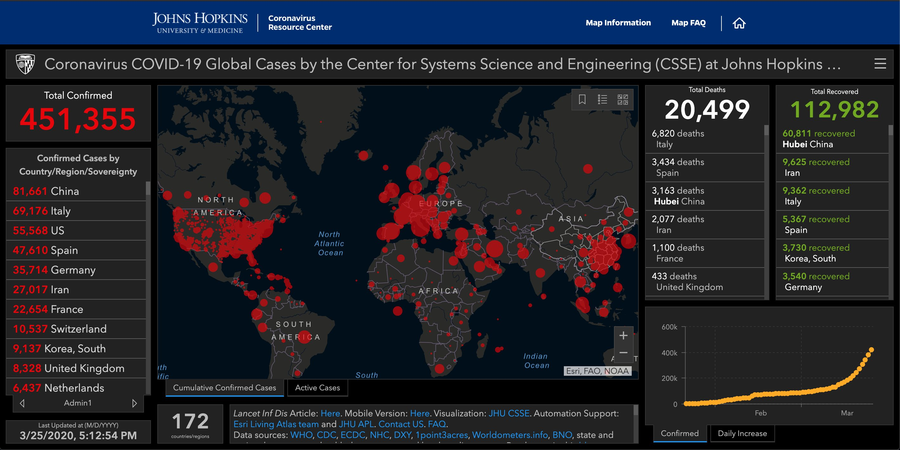

The aim of this course is to provide an upskilling and knowledge dissemination platform, centred around the innovations in the BODAH project.
The intended audience are stakeholders from the Public Sector, with a variety of skill sets, ranging from policy makers, decision makers, to data analysts and software developers.
The material provided covers subjects that correspond to the BODAH work packages, presented in a manner that allows self-study. In each section, we provide additional references, from the scientific domain, to enhance the understanding of main concepts.
The module is organised in sections which are easily accessible and can be studied as stand-alone components, depending on your domain expertise.
As with any educational material, we expect this course to evolve with time, so feel free to send us your comments and suggestions for improvements.
We thank you, and hope you will find this course useful for your endeavours.
1. Introduction to the Use of Big and Open Data for New Public Services
This section provides an overview on the definitions and use of Big and Open data, as described by the EU Commision. The references are there to provide a solid grounding on what is, and what is not open and big data, the challenges associated with its collection and use, and how tranformative it can be for our world.
Big Data
Data has become a key asset for the economy and our societies and the need to make sense of 'big data' is leading to innovations in technology.
Big data refers to large amounts of data produced very quickly by a high number of diverse sources. Data can either be created by people or generated by machines, such as sensors gathering climate information, satellite imagery, digital pictures and videos, purchase transaction records, GPS signals, and more. It covers many sectors, from healthcare to transport to energy.
Generating value at the different stages of the data value chain will be at the centre of the future knowledge economy. Good use of data can also bring opportunities to more traditional sectors such as transport, health or manufacturing. Improved analytics and processing of data, especially of big data, will make it possible to:
transform Europe’s service industries by generating a wide range of innovative information products and services;
increase the productivity of all sectors of the economy through improved business intelligence;
address more efficiently many of the challenges that face our societies;
improve research and speed up innovation;
achieve cost reductions through more personalised services;
We have selected, below, three videos, from the Publications Office of the European Union that explains what is open data, how can we extract value from it, and what determines the quality of data. Feel free to learn more about open data from the remaining videos, available here.
What is open data?
E-learning Module - Unlocking value from open data
What makes quality open data?
In addition, the EU has compiled documentation on the usage of Big and Open data, available on the Joinup collaboration and data.europa.eu portals, listed below
A key excerpt form the EU Joinup documentation, linked above is that:
Studies conducted for the European Commission showed that businesses and citizens were facing difficulties in finding and re-using public sector information. The Communication on Open data states that “the availability of the information in a machine-readable format and a thin layer of commonly agreed metadata could facilitate data cross-reference and interoperability and therefore considerably enhance its value for reuse”.
We believe that is is a major challenge withing the European area, and beyond, and in many ways requires us to take a step back, and revisit the suitability, quality and usability of our data. Towards this key message, the BODAH Course focuses on best practice and principles that are important for the utilisation of touristic data, in the future, with smarter (i.e., AI-enabled) services and systems.
Tourism is a major engine of economic development, but it also creates a burden difficult to bear among the inhabitants Mass tourism is promoted for destinations of great cultural, historical and heritage importance, some of them also classified as World Heritage sites by UNESCO.
BODAH (Big and Open Data for Atlantic Heritage) aims at improving cooperation, joint planning and at better managing conflicting interests to improve the management of two kind of cultural destinations that can benefit and be affected by tourism and the pressure of local citizens: Old-historical city centres and Sites of particular cultural or heritage interest.
The project takes advantage of technology and innovation in management tools (Smart Cities), in particular, through the collection of existing - and generation of complementary - data (Big Data, Open Data, Internet of the Things, data provided through existing sensors, local systems or cameras, etc.). One of the key objectives was to develop new solutions to address social and public needs, contributing to create new alternative offers adapted to the interests of visitors to better distribute their crowd flows, as well as redistribute impacts (both, environmental and economic ones) on heritage sites, cities and monuments.
The project, which began at the end of 2019, has managed to establish its own indicator system that determines which data should be measured and used for pilot schemes in four cities: Santiago de Compostela and San Sebastian in Spain, Pau in France, and Cork in Ireland.
An introduction to the projects goals and motivations can be seen below.
The project, which began at the end of 2019, has managed to establish its own indicator system that determines which data should be measured and used for pilot schemes in four cities: Santiago de Compostela and San Sebastian in Spain, Pau in France, and Cork in Ireland. The pilot studies in BODAH offer the opportunity to work with different types of data, touristic activity and patters, as well as stakeholder environments. In that regard, each site can be treated as a unique combination of opportunities and challenges, in terms of data collection and utilisation.
Visit the videos below, and get familiar with out pilot sites.
Sandiago de Compostela, Spain
Donostia - San Sebastian, Spain
Cork, Ireland
Pau, France
Tbe BODAH KPIs
The following presentation discusses the KPIs defined within the BODAH project, and includes important considerations about the exploitation of data in tourism.
The BODAH Data Processing Pipeline
BODAH's data processing pipeline (see Figure 1) is fairly conventional, and thus can be used as a case-study for the collection, preparation and utilisation of data in future, smart, AI-enabled services with capabilities of prediction and advanced sensemaking.

Figure 1: BODAH processing pipeline
The following sections of this course focus on each specific part of this processing pipeline and discuss their importance, challenges, best practices and solutions implemented within the BODAH project lifetime. Our experiences with the BODAH project can therefore be used in other systems that set to utilise in novel ways touristic data.
An important aspect of the BODAH project was the collection of data from pilot sites. The presentations below show the data collection activities and protocols implemented in the BODAH project.
Self Assessment Questions
What are the main challenges of data collection for tourism?
What are the important Key Performance Indicators of thw BODAH project?
A significant part of the BODAH project was the assessment of the quality of the datasets provided from the pilot sites. Nevertheless, as our world becomes more accustomed to work with data, older, legacy systems, different technilogical implementations and varying adoption levels of advanced technological systems from country to country, create a challenging mosaic of data with different levels of quality.
The BODAH teams spent a large ammount of time in homegenising the datasets provided from the different pilot sites, so that they can be used by the visualisation dahsboard, as well as subsequent systems.
The video below discusses some implications and best practice, originating from BODAH, which will be useful for projects of this type, that set to utilise open and big datasets in systems that provide analytics or some form of prediciton.
Self Assessment Questions
What do we mean by 'data quality'?
How do we ensure that our data sets have sufficient data quality?
Data visualisation is the graphical representation of information and data.
Half of the human brain is dedicated to processing things visually. Therefore, visualising information helps people perceive and make sense of concepts and relationships in a complex modern world today.
By using visual depictions, such as interactive graphs, maps, infographics etc. visualisation tools provide an accessible way to understand trends, outliers and patterns in data.
As a result, effective visualisations can contribute to a significantly better understanding of data and policies. They can achieve a considerably higher impact on policymakers and citizens and contribute to considerably higher political support.
Data Visualisation, as a discipline, has matured the last few years, driven by the abundancy and pervasiveness of data. Its origins can be traced back to ancient times, and maps, all the way to the 19th century and data-driven examples like John Snow's Map of Cholera outbreaks.
In modern times, visualisation has become a very powerful tool to make sense of massive ammounts of data. A good visualisation informs, tells a story and allows us to understand important information, removing the noise from data.
An example of the power of data visualisation became evident during the Covid-19 pandemic, where information on public health, all over the world, was agregatied in different forms of visualizations, dashboards and infographics (see Figure 2).
Figure 2: Data visualisation has become a powerful communication medium, as we have seen during the Covid-19 pandemic. Dashboards, such as the John Hopkins University Covid Resource Center provided visual summaries of the pandemic, informing the public and in many ways shaped our world's rapid responce. You can visit the dashboard here. [Source: Johns Hopkins Coronavirus Resource Center (CRC)]
6. Visualising Data With the BODAH Visualization Dashboard
One of the main outputs of the BODAH project was a Dashboard which allows the visualisation of datasets provided by the pilot sites. The Dashboard is publicly available here.
The primary purpose of the Dashboard, within the BODAH data processing pipeline, is to offer a powerfull tool for the assessment of the pilot sites data, towards the identification of patterns, trends and outliers.
Our system primarily uses Vega-Lite, a Web-based visualization authoring system suitable for visualizing the types of data collected during the project. Vega-lite is one of the most influencial tools created by the academic community. We have tailored visualizations to each data type.
Vega Lite specifications are written in JSON and if another project supplies data in the same format as a data types we already support, then our existing library of Vega Lite specifications can be used without the need to design new ones.
The Dashboard allows the visualisation of BODAH datasets, in varying levels of granulatiy. We provide multiple views of the same dataset at different temporal resolutions (if the data supplies time-series data). Most charts in the dashboard are interactive, allowing flitering and brushing operations to drill into data trends over time.
The videos below present an overview of the Dashboard.
We also provide a presentation of the visualisation authoring and API for further utilisation. The latter is suitable for analyssts and visualisation experts with some programming proficiency.
7. Enabling Future Analysis and Utilisation of Data
The final element of the BODAH pipeline is its capability to support novel mechanisms for the explotation of the underlying data, including new ways of presenting the data visually, as well as advanced data processing via machine learning. This section presents examples of such utilisation from the BODAH project.
Self Assessment Questions
What are the opportunities for utilising data, in order to create smarted services that allow advances sensemaking?
How can we use data to predict behaviours in the tourism industry?